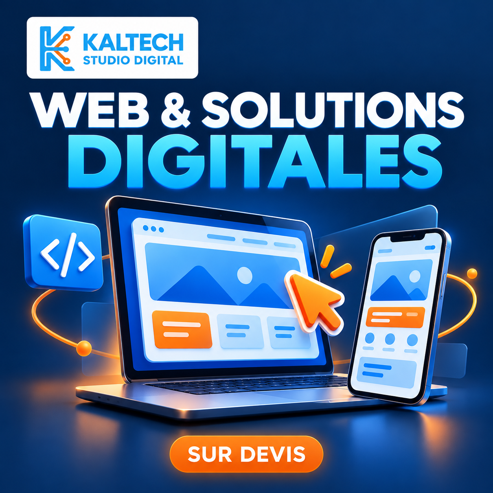
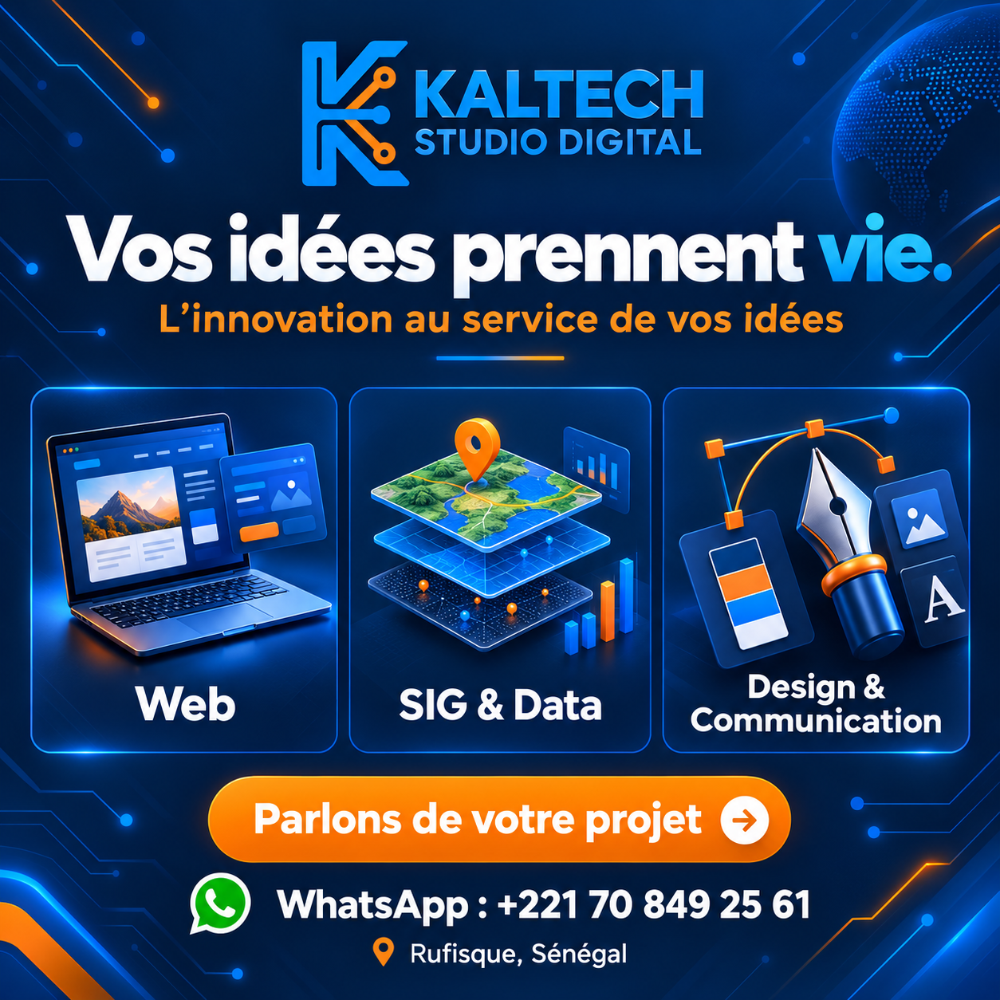
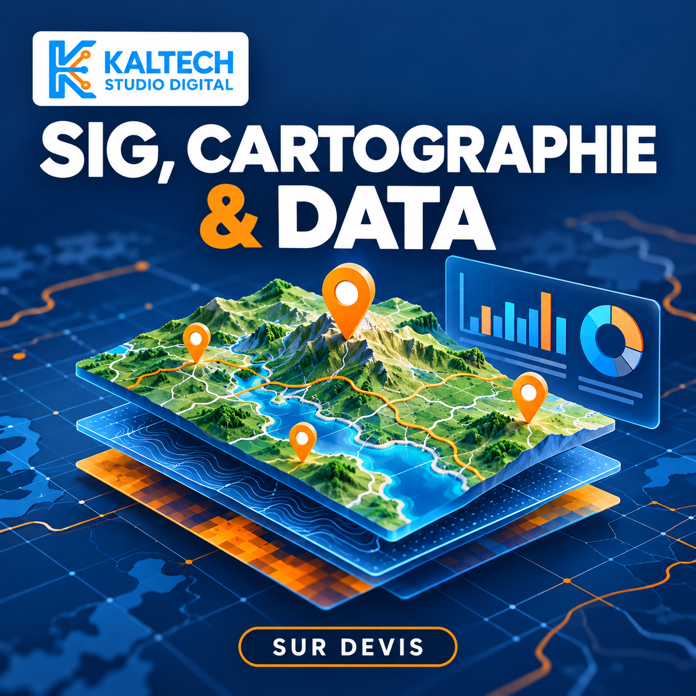
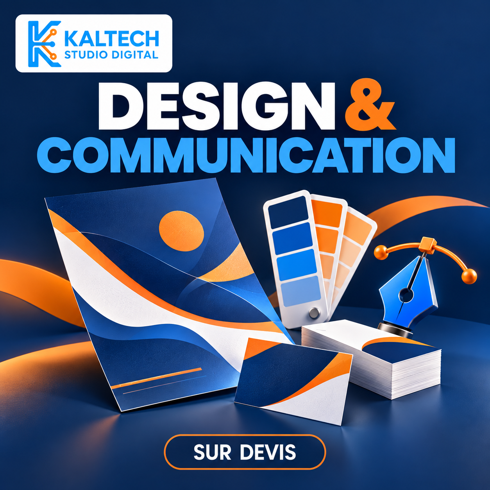

01 — WEB
Une présence qui vous ressemble.
Présentez votre activité et facilitez le contact avec vos clients.
- Sites vitrines et applications web
- Interfaces adaptées au mobile
- Maintenance et évolutions

STUDIO DIGITAL · RUFISQUE, SÉNÉGAL
Un site pour votre activité, des données pour vos décisions, une identité pour votre marque. Kaltech vous accompagne, de la première idée à la livraison.
L’innovation au service de vos idées.

Trois pôles. Un interlocuteur pour votre projet.
01 / NOS EXPERTISES
Nous définissons avec vous les livrables, le délai et le budget avant de commencer. Chaque projet fait l’objet d’un devis adapté.

01 — WEB
Présentez votre activité et facilitez le contact avec vos clients.

02 — SIG & DATA
Donnez du sens à vos données et rendez vos territoires lisibles.

03 — DESIGN & COMMUNICATION
Construisez une image cohérente sur vos supports et vos réseaux.
02 / NOTRE APPROCHE
Vous savez ce qui est prévu, ce qui est inclus et quand votre projet sera livré.
Vos objectifs, votre public, vos contenus et vos contraintes.
Un devis précise les livrables, le délai et les corrections incluses.
Le projet avance avec vos retours aux étapes convenues.
Vous recevez les éléments prévus et les indications utiles pour les utiliser.
Prestations standards : 50 % d’acompte à la validation du devis, 50 % à la livraison finale. Le démarrage intervient après réception de l’acompte et des éléments nécessaires.
03 / LE STUDIO
Kaltech Studio Digital accompagne les entrepreneurs, entreprises et organisations dans leurs projets numériques.
Notre démarche associe création, technologie et analyse de données. Nous privilégions des solutions adaptées à vos usages et à votre budget, avec un périmètre défini ensemble.
Faisons connaissance ↗04 / CONTACT
Décrivez votre besoin, votre délai souhaité et les éléments dont vous disposez. Nous échangerons pour préparer votre devis.
Écrire sur WhatsApp ↗LOCALISATION & HORAIRESRufisque, Sénégal
Tous les jours · 9 h – 21 h